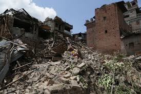

Introduction
On April 25, 2015, a powerful earthquake struck Nepal, registering a magnitude of 7.8.
The epicenter was near the city of Gorkha. It was the worst natural disaster to hit Nepal in over 80 years.
Historic buildings, homes, and temples were destroyed, especially in the Kathmandu Valley.

Over 9,000 people lost their lives, and more than 22,000 were injured.
Millions were left homeless. Many UNESCO World Heritage Sites were damaged or destroyed.
Rescue teams from around the world came to assist with search, rescue, and recovery operations.